Overview
Artisk instantly produces logos, product imagery and complete visual identities for any brand. I redesigned its homepage and generated the marketing visuals the new site needed.
Too dark, too heavy
The existing site was black-dominant with a green accent. The founder wanted a direction that felt lighter, airier and less demanding — closer to a modern AI product.
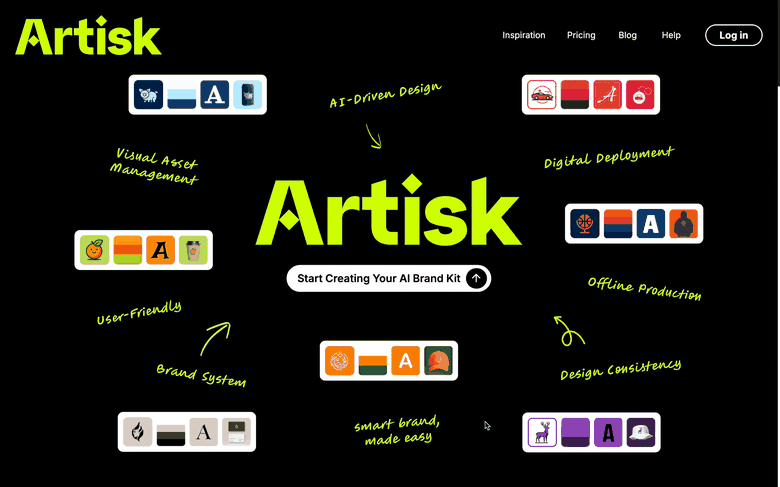
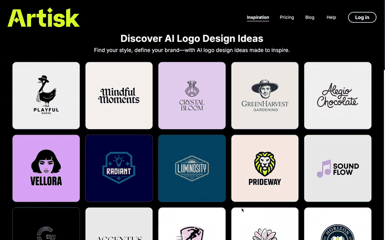
Three directions, one choice
With the other designers I studied how modern web products handle layout, hierarchy and lightness, and we distilled three directions.
Explore
Collect references from modern web products.
Distil
Three possible design directions.
Choose
Card-based modern style with the brand’s green accent.
Why
It mirrors the interface of the generator itself — site and product feel like one system.
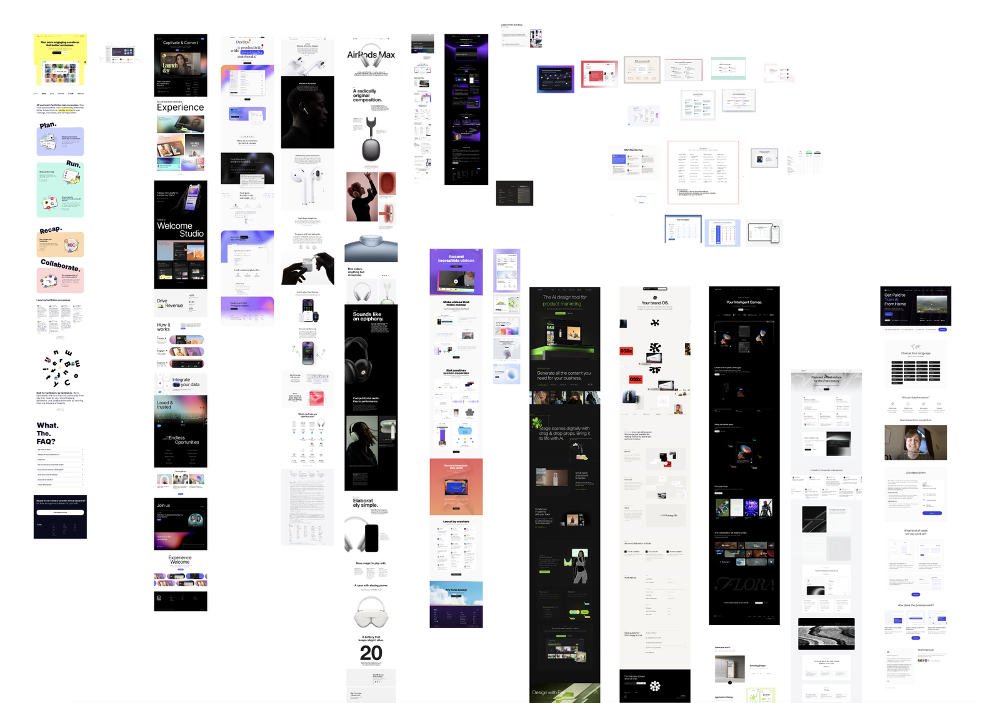
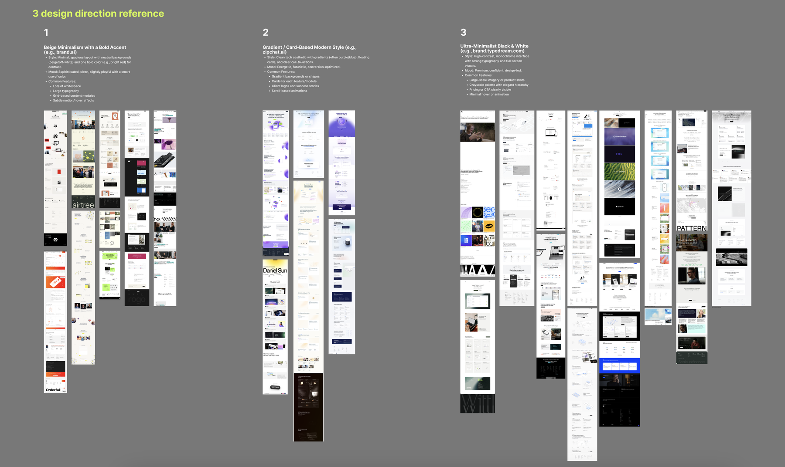
Homepage: from wireframe to final
The redesign covered Home, About, Inspiration, Pricing and Blog. I owned the homepage: wireframe iterations to lock the layout, finalised with a senior designer, then refined and filled with visuals.
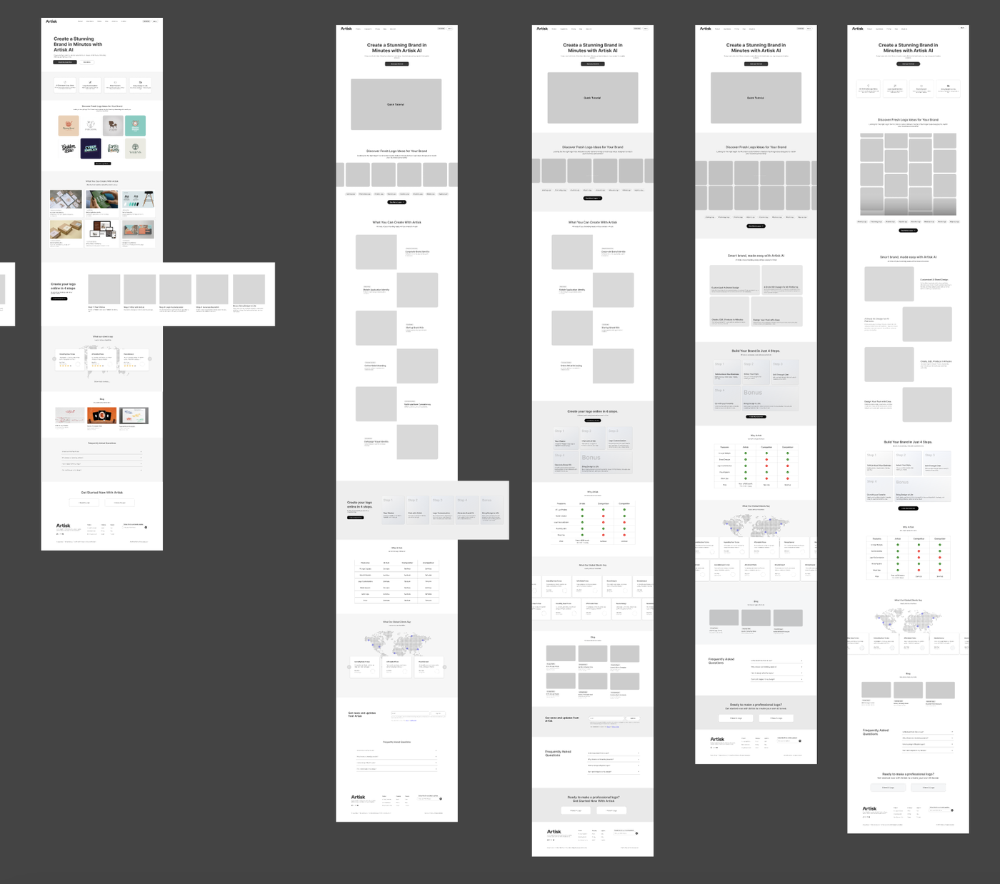
Imagery made with the product itself
One of the biggest parts of the internship. I used our own brand-kit generator for logos, product images and palettes, supported by other AI image tools and finished in Photoshop.
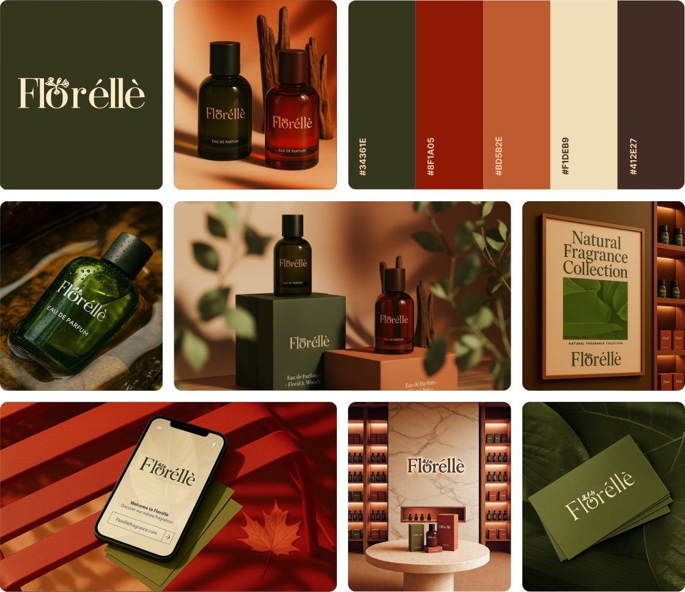
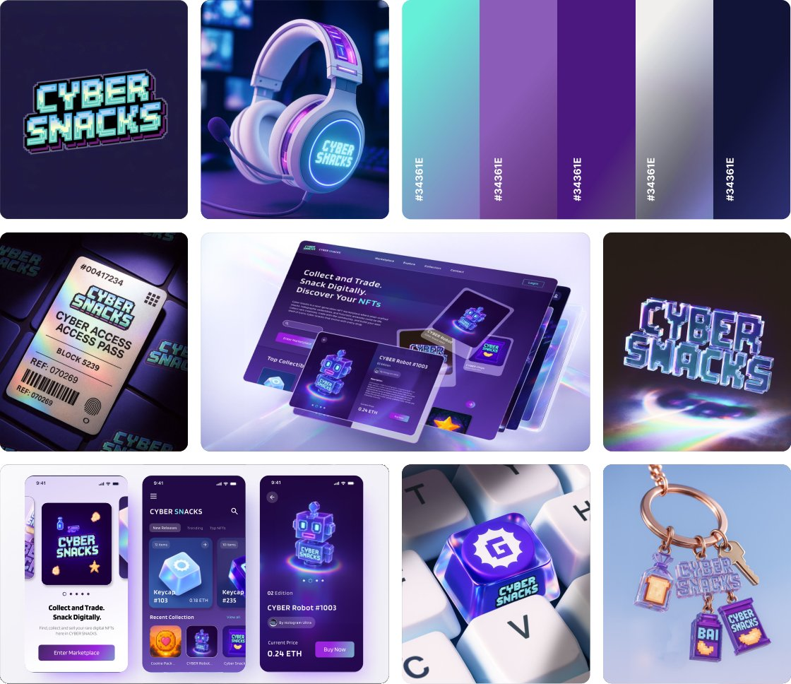
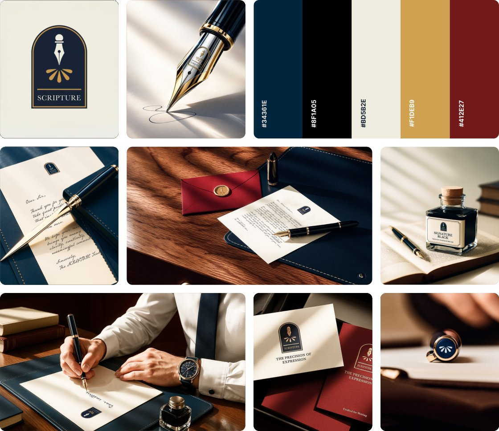
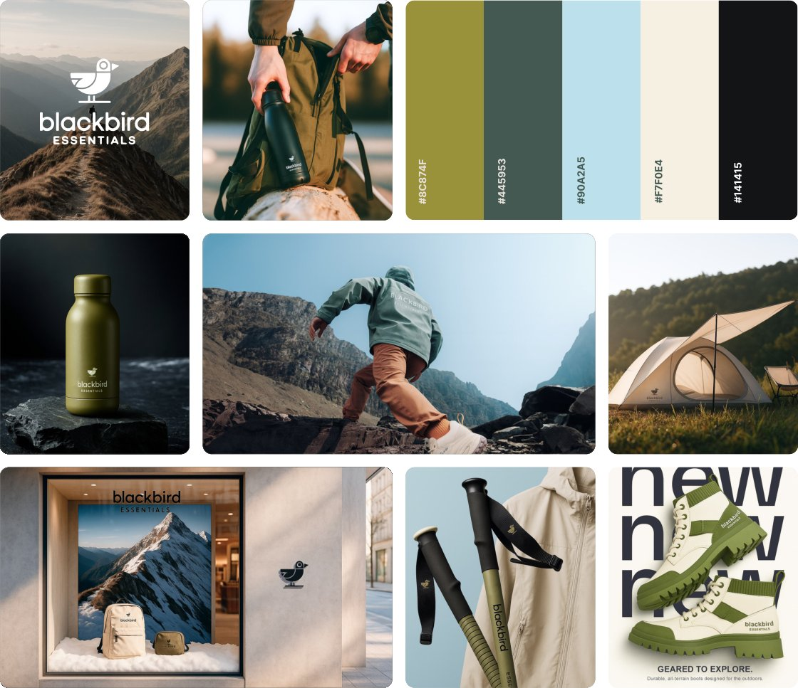
Distinct logos and imagery across industries — proof the tool can build a cohesive direction for almost any business. Hover to pause.
Start with your logo
Chat with Artisk AI
Customise the logo
Generate the full brand kit
Make it real
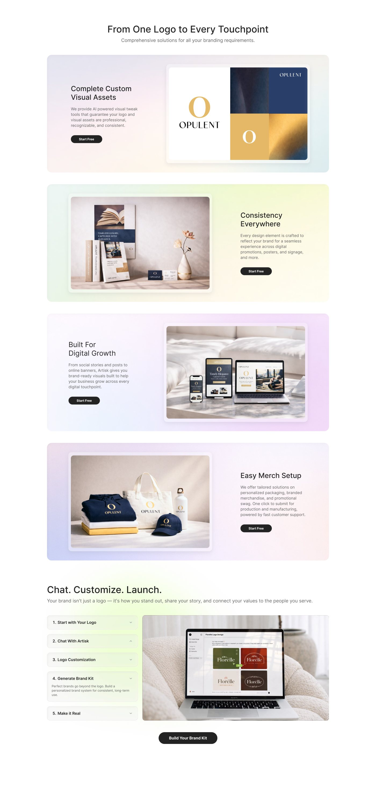
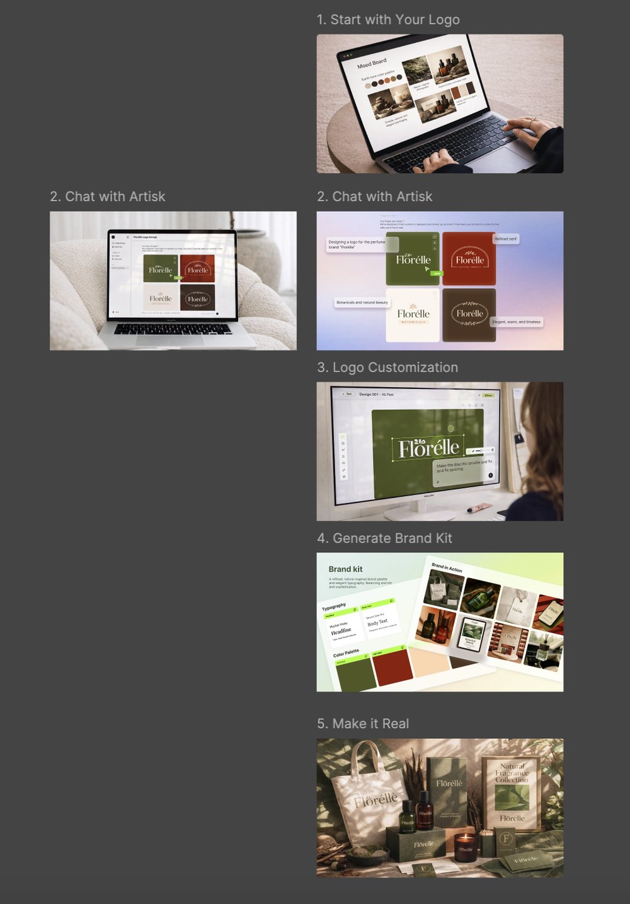
The final landing page
Light, card-based and unmistakably an AI product, with the brand’s green woven through as an accent. Scroll inside the frame, or open it full size.
Recognised by the senior designer and the founder, and a reference for the site’s visual direction.